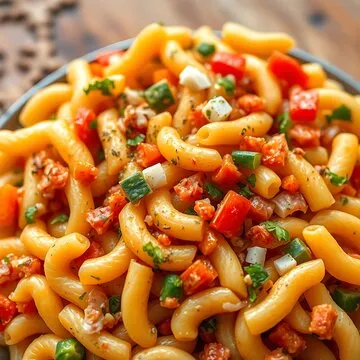

How to Make Macaroni and Fries
Macaroni and Cheese

Description:
Macaroni and cheese is a comforting dish made from cooked elbow macaroni pasta coated in a creamy, cheesy sauce. It's often baked for a crispy topping or served immediately as a creamy side dish or main course. The creamy sauce is typically made from a combination of butter, milk, and cheese, creating a rich and savory dish that’s beloved worldwide.
Ingredients for Macaroni and Cheese:
- For the Macaroni:
- 2 cups elbow macaroni (or any pasta of your choice)
- Salt (for pasta water)
- For the Cheese Sauce:
- 2 tbsp unsalted butter
- 2 tbsp all-purpose flour
- 1 ½ cups milk (preferably whole milk)
- 1 cup shredded cheddar cheese (or a mix of cheeses like mozzarella and gouda)
- ½ cup grated Parmesan cheese
- Salt and pepper to taste
- ½ tsp garlic powder (optional)
- ¼ tsp mustard powder (optional, for extra flavor)
Steps to Make Macaroni and Cheese:
- Cook the Macaroni:
- Bring a large pot of salted water to a boil. Add the macaroni and cook according to the package instructions (usually 8-10 minutes).
- Once done, drain the pasta and set it aside.
- Make the Cheese Sauce:
- In a saucepan, melt the butter over medium heat. Once melted, whisk in the flour and cook for about 1 minute to form a roux.
- Slowly add the milk, whisking constantly to avoid lumps. Continue cooking until the mixture thickens (about 3-5 minutes).
- Stir in the cheddar cheese and Parmesan until melted and smooth.
- Season with salt, pepper, garlic powder, and mustard powder if using.
- Combine:
- Add the cooked macaroni to the cheese sauce and stir until the pasta is well coated.
- If the sauce is too thick, you can add a bit more milk to reach your desired consistency.
- Serve:
- Serve immediately as a creamy, cheesy dish. You can also top it with breadcrumbs and bake it for a crispy crust if desired.
back to homepage